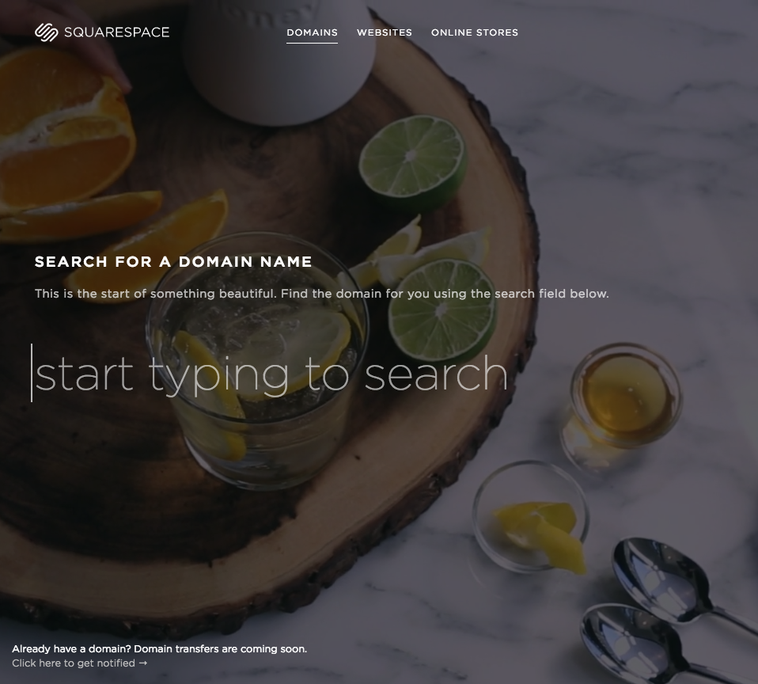
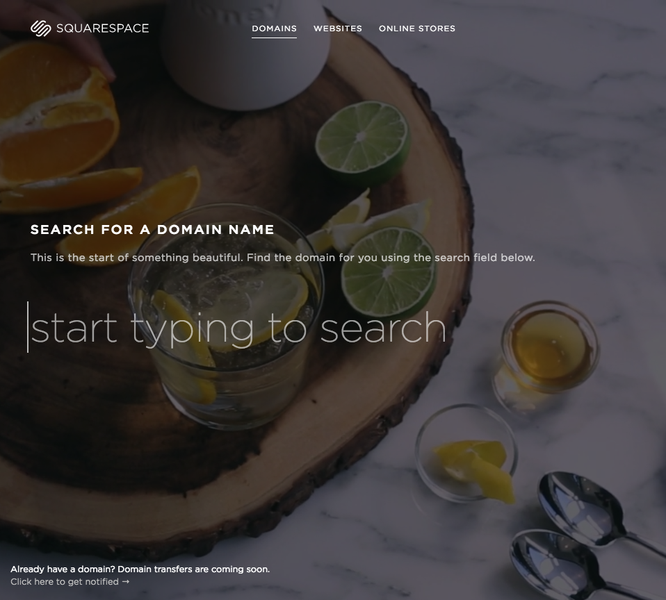

 - This website is just phenominal no complaints from myself.
- It is catchy to the point where you would not want to stop surfing through the details, videos, and descriptions of the products.
- VERY SLEEK !
- I've personally find this website as a great design.
- It makes me want to explore through the tabs and watch the videos with great immagery, and plean and simple navigation.
- I appreciate Jimmy Jazz even though theres a lot of content to surf through.
- I appreciate the tab directory and the different but detailed options I have to find exacly what I want.
- It is important because for aprrearance fashion we prefer detailed down to the T sizes and styles we need and this website provides that.
- GREAT PHOTOS AND COLORS!
- Flickr is a great inspiration for visual design and has an organization that is easy to skim through and find what you want.
- One of the best offers this website has is photos that can be used without a copyright restriction.
I am taking this class to learn more about how websites and codes work. I am very interested in knowing what happens behind the scenes of a Web Designer. There's a lot of hardwork put into creating a successful website.
I hope to achieve the profession understanding a great amount of how to comprehend code and building an http:// from scratch to eventually create my own.The technologies I'm interested is the instruments of applications on the computer like Text Mate mastering this product